模型分享
10月04日STl图纸文件分享
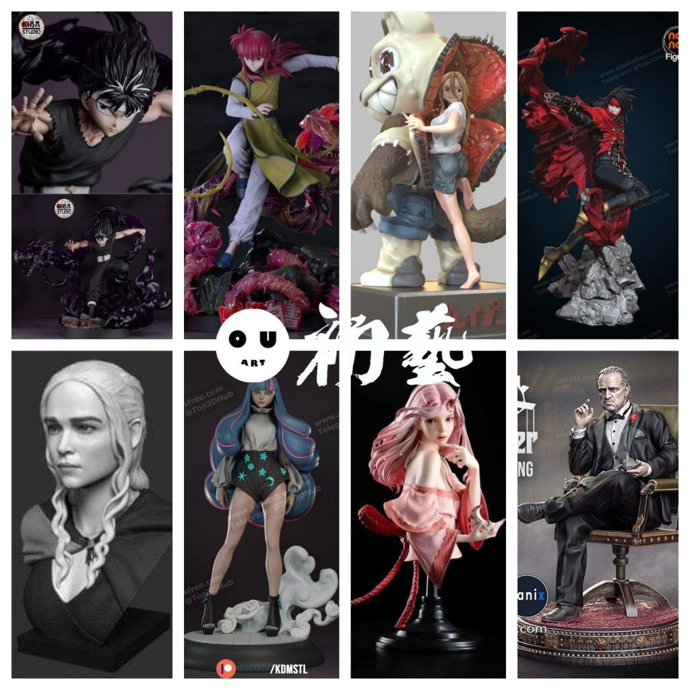
1.幽游白书——飞影，看了不少幽游白书的模型，这个做的非常还原，造型精度都不错。
链接：https://pan.baidu.com/s/19CUAWoN_aQKlIMAn6iVeUw
提取码：xku7

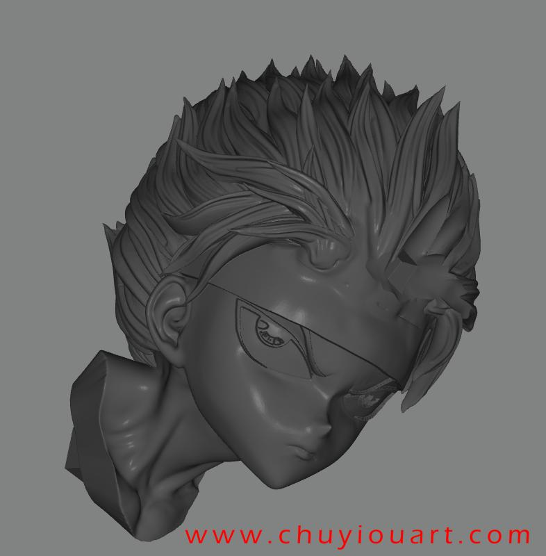

2.幽游白书——藏马，同上，品质很好，中小比例涂装很合适。
链接：https://pan.baidu.com/s/1XihhPRfr1LG-tHqpGpmcvw
提取码：urlx

3.格莱普尼尔——修一&红爱，还原动漫，模型精度普通，粉丝向吧。
链接：https://pan.baidu.com/s/1WVreC1XmQDb9BO1fqivqtA
提取码：jjfc
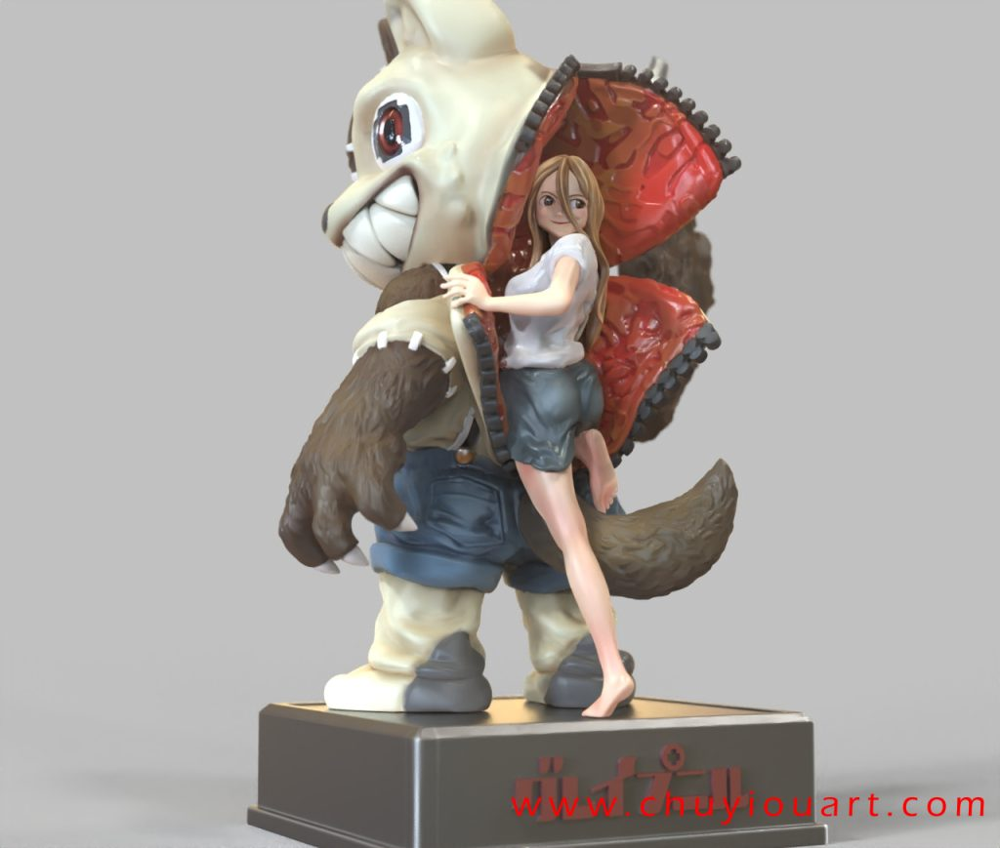
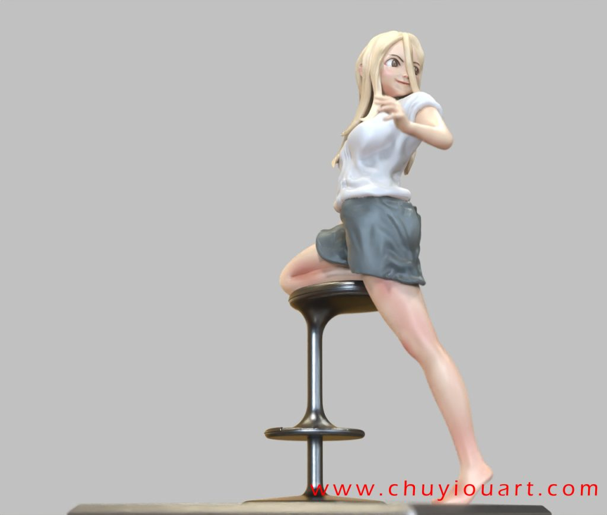

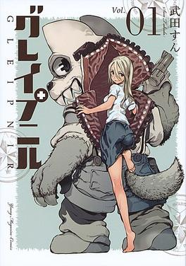
4.最终幻想——文森特，ff人气角色，造型、分件、精度绝佳，nomnom出品。通
链接：https://pan.baidu.com/s/1TN01Iq19tTuulZQh6MEGLQ
提取码：o8e9


5.龙妈胸像，还原度高，一体成型的，没有分件。
链接：https://pan.baidu.com/s/1fKyBNpoxerHmY5AnCdpMxA
提取码：ddi9
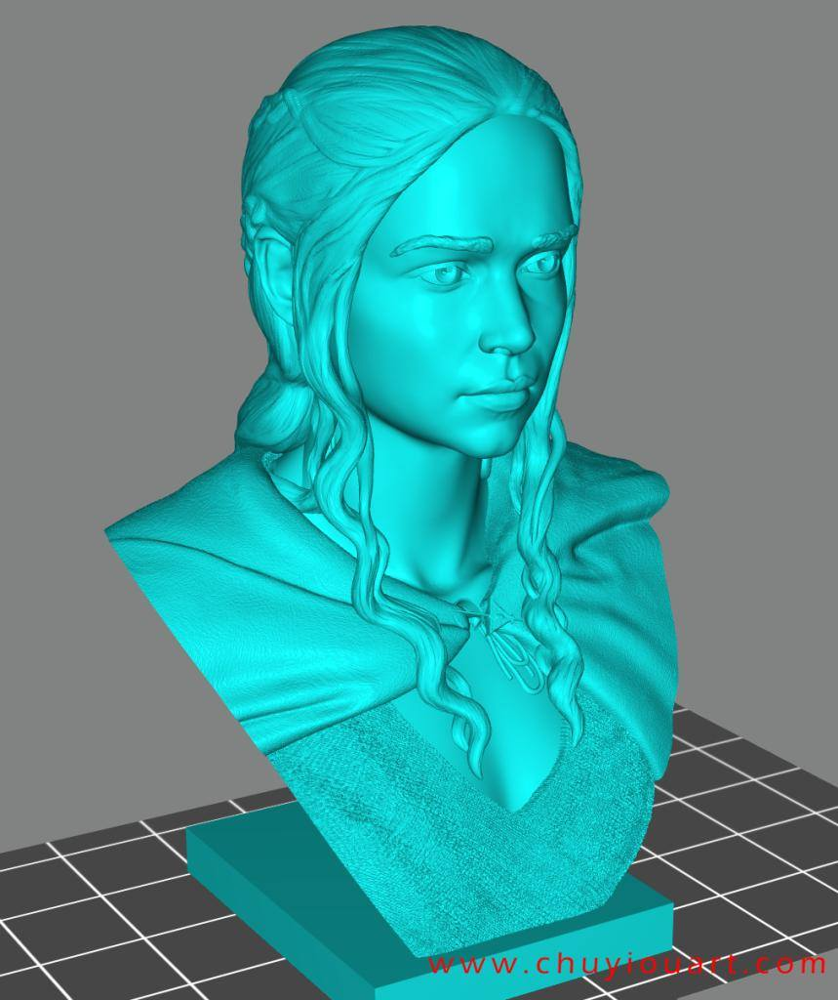

6.火影忍者——艾达，博人传里面的逆天能力者，挺还原的，粉丝向。
链接：https://pan.baidu.com/s/1WkizoRDXug4BsERmpWVzoQ
提取码：0l3e
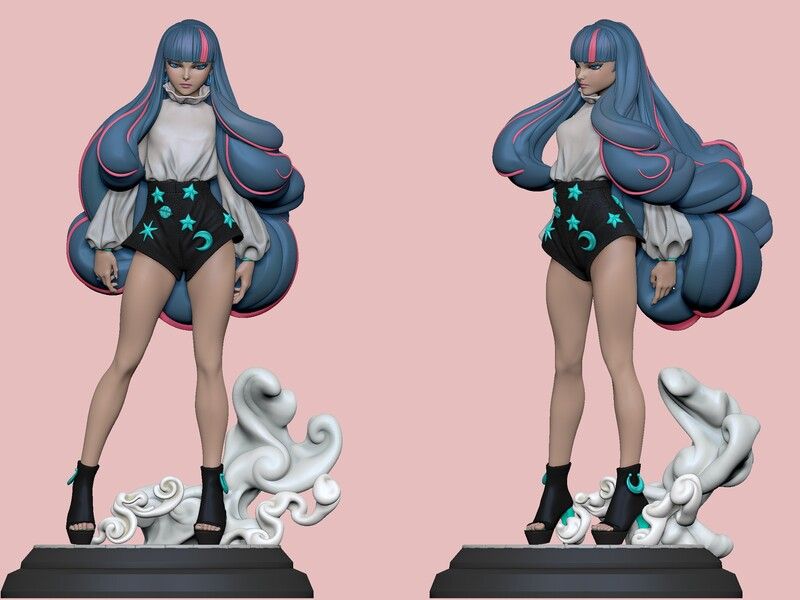
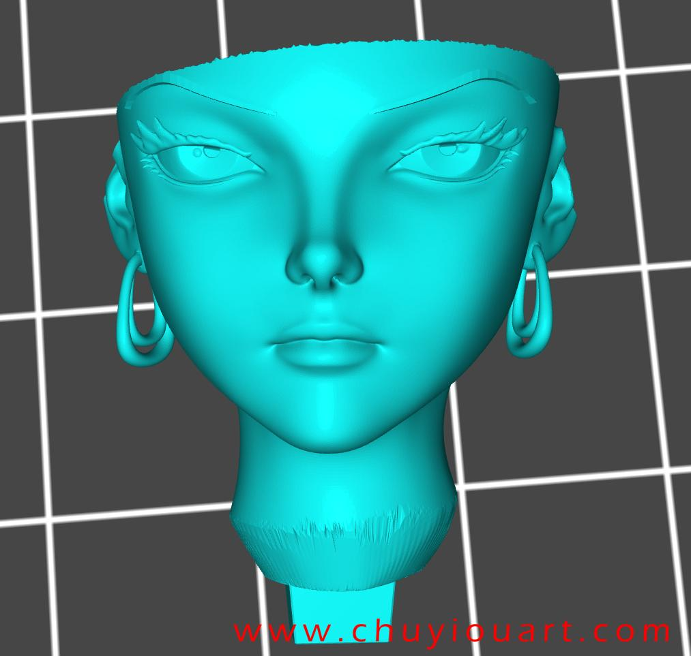
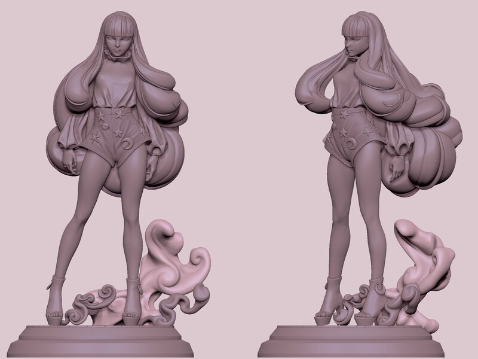
7.关于我转生变成史莱姆这档事——创作大于还原的意愿吧，精度很好，分件细致，动态优秀。不考虑原作是非常好的作品。
链接：https://pan.baidu.com/s/1H9vCB8iVvOC0Zk-cooMByQ
提取码：m2zg
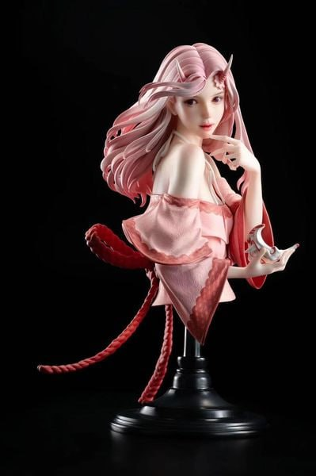
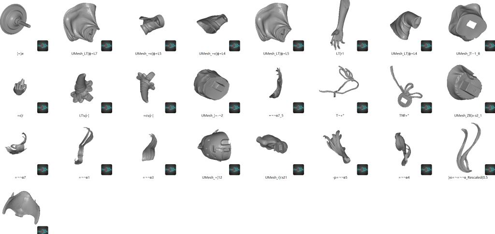
8.教父，这个市面上的模型很多，不知道这个是不是逆向做的，不过精度还是可以的，还原也很好。
链接：https://pan.baidu.com/s/1YGKYu6Yf9FrceXC5PMGfyw
提取码：xph6
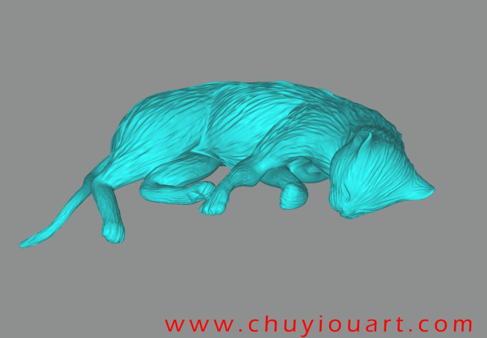

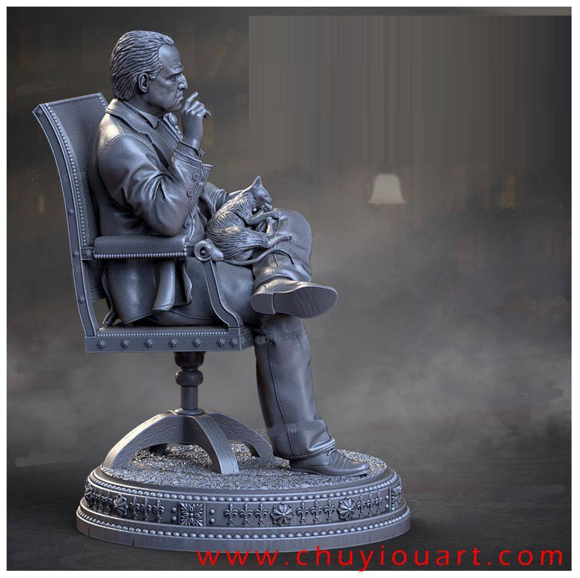

以上内容仅供个人使用（非商用）
ONLY for PERSONAL (NON-COMMERCIAL) use.
加群获得更多免费模型！